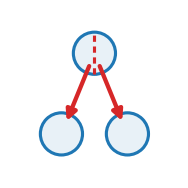

bm_secrete
Lay down NEW membrane as the surface it sits on grows: the sheet gains material rather than only thinning.

structural acts on: particle prediction: none
Lay down NEW membrane as the surface it sits on grows: the sheet gains material rather than only thinning.
Role in Plexus
- Kind — \(|S|\) structural: change the entities themselves — divide, die, grow.
- Acts on —
particle(the set the operator acts on). - Reads — –
- Writes / returns — emits no integrated force — it mutates a field / relation / membership, or feeds a substep.
- Prediction —
none. - Dimensions — 3D.
Mechanism
than only thinning.
basement_membrane -> basement_membrane: activates dormant particles at the surface, gives them positions, and lets the crosslink operator bond them in.
n_new(t) proportional to the area the surface gained this frame
x_new placed in the sparsest directions of the current sheetA sheet anchored at fixed angular positions on a sphere whose radius triples must cover nine times the area with the particles it started with. It has exactly three ways out, and no stiffness avoids the trilemma because the trilemma is not about stiffness:
- SLIP – the adhesion is too weak, and the sheet sinks through the surface it should sit on;
- TEAR – the adhesion is strong enough to hold, and the crosslinks fail instead;
- an APPARENT hold, in which the sheet neither slips nor tears but the matrix stress runs orders of magnitude above every stable run – which is not a third option, it is an unstable simulation.
The trilemma is about MATERIAL. Real basement membrane is secreted continuously by the cells it rests on, which is why an acinus can triple in size without its membrane thinning to nothing.
Reference: Plexus (this work); continuous secretion of basement-membrane components by the epithelium they underlie.
Parameters
| parameter | role | default |
|---|---|---|
rate |
max_fraction_secreted_per_frame | 0.02 |
targeted |
load_directed_vs_uniform | 1.0 |
centre |
tissue_centre | [0.5, 0.5, 0.5] |
relax_new |
– | 4 |
deposit |
– | “uniform” |
cand_mult |
– | 12 |
relax_every |
– | 20 |
relax_sweeps |
– | 3 |
Minimal spec
operators:
- {op: bm_secrete, at: particle}Source
src/plexus/operators/membrane_ops.py — the registered operator.
@register_operator("bm_secrete", family="population", set="particle", kind="structural")
class BasementMembraneSecrete(Structural):
"""Lay down NEW membrane as the surface it sits on grows: the sheet gains material rather
than only thinning.
basement_membrane -> basement_membrane: activates dormant particles at the surface, gives them
positions, and lets the crosslink operator bond them in.
n_new(t) proportional to the area the surface gained this frame
x_new placed in the sparsest directions of the current sheet
A sheet anchored at fixed angular positions on a sphere whose radius triples must cover nine
times the area with the particles it started with. It has exactly three ways out, and no
stiffness avoids the trilemma because the trilemma is not about stiffness:
* SLIP -- the adhesion is too weak, and the sheet sinks through the surface it should sit on;
* TEAR -- the adhesion is strong enough to hold, and the crosslinks fail instead;
* an APPARENT hold, in which the sheet neither slips nor tears but the matrix stress runs
orders of magnitude above every stable run -- which is not a third option, it is an
unstable simulation.
The trilemma is about MATERIAL. Real basement membrane is secreted continuously by the cells it
rests on, which is why an acinus can triple in size without its membrane thinning to nothing.
Reference: Plexus (this work); continuous secretion of basement-membrane components by the
epithelium they underlie.
"""
EMIT = None
SUPPORTED_DIMS = [3]
DIFFERENTIABLE = False
MAY_MUTATE_INTEGRATED_STATE = True
MECHANISM_TAGS = ["secretion", "material_addition", "load_directed_deposition"]
PARAM_ROLES = {"rate": "max_fraction_secreted_per_frame", "targeted": "load_directed_vs_uniform",
"centre": "tissue_centre"}
REFERENCE = ("Plexus (this work). Continuous basement-membrane deposition during epithelial growth: "
"Ku & Bilder (2023) Dev. Cell 58:522; Toepfer et al. (2022) Development 149:dev200456.")
def __init__(self, params, device="cpu"):
super().__init__(params, device)
self.at = params.get("_at", "basement_membrane_particle")
self.centre = [float(v) for v in params.get("centre", [0.5, 0.5, 0.5])]
self.rate = float(params.get("rate", 0.02))
self.targeted = float(params.get("targeted", 1.0))
self.relax_new = int(params.get("relax_new", 4))
self.deposit = str(params.get("deposit", "uniform")).lower() # uniform | gaps | parent
self.cand_mult = int(params.get("cand_mult", 12))
self.relax_every = int(params.get("relax_every", 20)) # sweep the whole sheet this often
self.relax_sweeps = int(params.get("relax_sweeps", 3))
self._r0 = None
self._n0 = None
def forward(self, H, mask=None):
lvl = H.level(self.at)
pos = lvl.get("pos")
dev, dt_ = pos.device, pos.dtype
live = getattr(H, "membrane_alive", None)
if live is None:
return {}
n_live = int(live.sum())
n_tot = pos.shape[0]
if n_live >= n_tot:
return {} # the reserve is spent; nothing left to lay down
c = torch.tensor(self.centre, device=dev, dtype=dt_)
r = (pos[live] - c).norm(dim=1)
R = float(r.mean())
if self._r0 is None:
self._r0, self._n0 = R, n_live
return {}
# AREAL DENSITY IS THE SETPOINT, not particle count: the sheet should be as thick per unit area
# at the end as at the start, and area goes as R^2.
want = min(n_tot, int(round(self._n0 * (R / max(self._r0, 1e-9)) ** 2)))
add = want - n_live
add = min(add, max(1, int(self.rate * n_live)))
if add <= 0:
return {}
# BONDS ARE ONLY NEEDED BY `parent`, which weights sites by the load on each particle's own
# crosslinks. `uniform` and `gaps` never look at them -- so returning early when there is no
# network would disable secretion for the entire continuum membrane, silently. The live
# particle count then stays frozen at its seeded value, which is what a rate parameter looks
# like when nothing reads it: the sheet holds its radius while the tissue grows past it,
# leaving the membrane INSIDE the spheroid.
bonds = getattr(H, "membrane_bonds", None)
if bonds is None and self.deposit not in ("uniform", "gaps"):
return {}
if bonds is not None:
bi, bj, brest, balive = bonds
d = (pos[bj] - pos[bi]).norm(dim=1).clamp_min(1e-9)
strain = ((d - brest) / brest) * balive.to(dt_)
# DEPOSIT AGAINST PARTICLES, NOT AGAINST BONDS -- and this is the correction that matters.
# Two versions failed before this one. Taking the globally most strained BONDS is winner-take-all:
# this matrix has a dense polar cone, so every new particle landed there and the rest of the
# sphere stayed bare. Sampling bonds in proportion to strain fixed the aim and not the outcome,
# because the deeper fault is the same in both: a site is a MIDPOINT OF AN EXISTING BOND. A patch
# that has lost its crosslinks therefore cannot receive new material, so it dilutes further and
# loses more -- a one-way ratchet into bare, whose end state is a strain of exactly zero
# away from the pole: not a small number, zero, meaning no particle there has a bond left.
#
# Cells are what secrete, and cells are everywhere on the surface. So the site is a LIVE PARTICLE,
# chosen with weight (local sparsity x load), and the new material goes beside it, tangentially,
# about one target spacing away. An isolated particle with no bonds at all is then still a place
# the membrane can be repaired, which is what makes coverage recoverable instead of a ratchet.
idx_live = live.nonzero(as_tuple=True)[0]
sub = pos[idx_live]
if self.deposit in ("uniform", "gaps"):
# WHERE THE CELLS ARE, NOT WHERE THE HOLES ARE. Cells secrete basement membrane basally,
# into the patch of surface directly beneath themselves: laminin polymerises on the cell
# surface where integrin and dystroglycan nucleate it, collagen IV assembles onto that and is
# crosslinked in place. So deposition is LOCAL TO EACH CELL and uniform per unit basal area.
#
# That rules out both of the rules tried here. Placing new material beside an existing node
# is a random walk and clumps. Placing it in the largest gap is worse as biology, however
# well it packs: it needs a global view of where every hole is, and a cell has none -- it
# cannot know whether there is a gap two cells away.
#
# Uniform-per-area is what a sheet of secreting cells does, and it fills a hole at exactly
# the rate it adds to anywhere else, which is the honest mechanism. Evening out is then the
# job of the network itself -- crosslink turnover and rearrangement -- not of aimed
# deposition. `deposit="gaps"` is kept as the non-biological upper bound on how well
# targeted placement could do.
n_cand = max(add * self.cand_mult, add)
cd = torch.randn(n_cand, 3, generator=None, device=dev, dtype=dt_)
cd = cd / cd.norm(dim=1, keepdim=True).clamp_min(1e-12)
best = torch.full((n_cand,), 1e9, device=dev, dtype=dt_)
near = torch.zeros(n_cand, dtype=torch.long, device=dev)
u_live = (sub - c) / (sub - c).norm(dim=1, keepdim=True).clamp_min(1e-12)
blk = 4096
for a0 in range(0, n_cand, blk):
b0 = min(n_cand, a0 + blk)
dd = 1.0 - (cd[a0:b0] @ u_live.T).clamp(-1, 1) # 1 - cos, monotone in angle
v, i_ = dd.min(dim=1)
best[a0:b0] = v
near[a0:b0] = i_
if self.deposit == "uniform":
# every candidate direction is equally acceptable: a cell secretes under itself, and the
# cells tile the surface, so the deposition field is flat per unit area
pick_c = torch.randperm(n_cand, device=dev)[:min(add, n_cand)]
else:
# the non-biological bound: purely how far a candidate is from anything already there
pick_c = torch.topk(best, min(add, n_cand)).indices
add = int(pick_c.numel())
slot = (~live).nonzero(as_tuple=True)[0][:add]
add = int(slot.numel()); pick_c = pick_c[:add]
rad = (sub - c).norm(dim=1)[near[pick_c]][:, None]
pos[slot] = c + cd[pick_c] * rad
v = lvl.get("vel") if "vel" in lvl.state_schema else None
if v is not None:
v[slot] = v[idx_live][near[pick_c]]
m = getattr(lvl, "mass", None)
if m is not None:
m[slot] = m[idx_live][near[pick_c]]
F = getattr(lvl, "F", None)
if F is not None:
F[slot] = torch.eye(F.shape[-1], device=dev, dtype=F.dtype)
Cb = getattr(lvl, "C", None)
if Cb is not None:
Cb[slot] = 0.0
live = live.clone(); live[slot] = True
H.membrane_alive = live
H.membrane_new = slot
SECRETE_TRACE.append((n_live, add, int(live.sum()), R))
return {}
# ---- deposit == "parent": the original rule, kept as the contrast ------------------------------
# Its parent selection lived in the code the uniform/gaps branch replaced, so it has to be
# restated here. Weighted by local sparsity and by load, exactly as before -- 79 exists to say
# what changes when only the ANCHORS move, so its deposition has to be the old one unchanged.
want_sp = math.sqrt(4.0 * math.pi * R * R / max(n_live, 1))
pl = torch.zeros(n_tot, device=dev, dtype=dt_)
pc = torch.zeros(n_tot, device=dev, dtype=dt_)
for a_, b_ in ((bi, bj), (bj, bi)):
pl.index_add_(0, a_, strain.clamp_min(0.0))
pc.index_add_(0, a_, balive.to(dt_))
pl = pl / pc.clamp_min(1.0)
w = 1.0 + self.targeted * pl[idx_live]
k_ = min(add, idx_live.numel())
if float(w.sum()) <= 0:
pick = torch.randperm(idx_live.numel(), device=dev)[:k_]
else:
pick = torch.multinomial(w, k_, replacement=False)
src = idx_live[pick]
slot = (~live).nonzero(as_tuple=True)[0][:add]
add = int(slot.numel()); src = src[:add]
# beside the chosen particle, tangentially, about one target spacing out, then back onto the shell
u0 = (pos[src] - c)
r0 = u0.norm(dim=1, keepdim=True).clamp_min(1e-9)
u0 = u0 / r0
rnd = torch.randn(add, 3, device=dev, dtype=dt_)
tang = rnd - (rnd * u0).sum(1, keepdim=True) * u0
tang = tang / tang.norm(dim=1, keepdim=True).clamp_min(1e-12)
newp = c + u0 * r0 + tang * want_sp
newp = c + (newp - c) / (newp - c).norm(dim=1, keepdim=True).clamp_min(1e-12) * r0
pos[slot] = newp
v = lvl.get("vel") if "vel" in lvl.state_schema else None
if v is not None:
v[slot] = v[src]
m = getattr(lvl, "mass", None)
if m is not None:
m[slot] = m[src]
# NEWLY SECRETED MATERIAL IS UNSTRAINED, and this is not a detail. Marking a parked particle
# dormant by mass alone does NOT stop it scattering, the stress term being weighted by
# p_vol rather than m -- and `mpm_gather` still hands it a velocity every frame while
# `mpm_strain` still integrates its deformation gradient from it. Sitting at the tissue centre for
# hundreds of frames, F drifts arbitrarily far from identity. Activating it then promotes that
# accumulated garbage into real material with real mass, and a single such particle can carry a
# stress orders of magnitude above the rest, which renders as a few blazing pixels against a
# black field and puts the colour scale of the whole run at the mercy of one particle.
F = getattr(lvl, "F", None)
if F is not None:
F[slot] = torch.eye(F.shape[-1], device=dev, dtype=F.dtype)
Cb = getattr(lvl, "C", None)
if Cb is not None:
Cb[slot] = 0.0
oc = getattr(lvl, "occ", None)
if oc is not None:
oc[slot] = 1.0 # spawn: the flag mpm_scatter/mpm_gather key off
live = live.clone(); live[slot] = True
H.membrane_alive = live
H.membrane_new = slot
# RELAX THE NEW MATERIAL INTO THE GAPS. Placing a node beside a randomly chosen parent, one
# spacing away in a random tangential direction, is a random walk -- and random walks clump. The
# parent is weighted toward sparse regions but the PLACEMENT is not, so the node lands next to
# the parent rather than in the hole. Measured: the seeded sheet has a p99.9 clearance of 1.10
# spacings (better than uniform random at 1.53), and by the end of a run it has degraded to 3.08.
# The holes an external reviewer called too big are made here, not at initialisation.
#
# A few repulsion sweeps over the newly placed nodes push them off their neighbours and into the
# space that is actually free. Only the new ones move: relaxing the whole sheet every frame would
# fight the integrin anchors, which are the thing holding it in place.
# THE WHOLE SHEET, PERIODICALLY. Relaxing only the nodes placed this frame is a placement
# correction, not a repair: once a gap has opened, nothing ever revisits it. Measured over a full
# run that bought 20% (clearance 3.08 -> 2.47 spacings) against a well-packed 1.10. Every
# `relax_every` frames the live sheet is swept as a whole so existing gaps are closed too.
_f = int(getattr(H, "frame", -1) or -1)
if self.relax_every > 0 and _f > 0 and _f % self.relax_every == 0:
idx_all = live.nonzero(as_tuple=True)[0]
sp_a = math.sqrt(4.0 * math.pi * R * R / max(int(live.sum()), 1))
for _ in range(self.relax_sweeps):
pa = pos[idx_all]
blk = 4096
push_all = torch.zeros_like(pa)
for a0 in range(0, pa.shape[0], blk):
b0 = min(pa.shape[0], a0 + blk)
dd = (pa[a0:b0, None, :] - pa[None, :, :]).norm(dim=-1)
dd[torch.arange(b0 - a0, device=dev), torch.arange(a0, b0, device=dev)] = 1e9
nd, ni = torch.topk(-dd, min(7, pa.shape[0]), dim=1)
nd = -nd
diff = pa[a0:b0, None, :] - pa[ni]
w_ = (sp_a - nd).clamp_min(0.0) / sp_a
push_all[a0:b0] = (diff / nd[..., None].clamp_min(1e-9) * w_[..., None]).sum(1)
pn = pa + push_all * (0.3 * sp_a)
rad = (pa - c).norm(dim=1, keepdim=True)
pos[idx_all] = c + (pn - c) / (pn - c).norm(dim=1, keepdim=True).clamp_min(1e-12) * rad
if self.relax_new > 0 and add:
sp_t = want_sp
for _ in range(self.relax_new):
pn = pos[slot]
d2 = (pn[:, None, :] - pos[live][None, :, :]).norm(dim=-1)
d2 = torch.where(d2 > 1e-9, d2, torch.full_like(d2, 1e9))
k_ = min(7, int(live.sum()))
nd, ni = torch.topk(-d2, k_, dim=1)
nd = -nd
diff = pn[:, None, :] - pos[live][ni]
w_ = (sp_t - nd).clamp_min(0.0) / sp_t
push = (diff / nd[..., None].clamp_min(1e-9) * w_[..., None]).sum(1)
pn = pn + push * (0.3 * sp_t)
# back onto the shell: relaxation must not change the radius the anchors set
rad = (pos[slot] - c).norm(dim=1, keepdim=True)
dirn = (pn - c) / (pn - c).norm(dim=1, keepdim=True).clamp_min(1e-12)
pos[slot] = c + dirn * rad
SECRETE_TRACE.append((n_live, add, int(live.sum()), R))
return {}